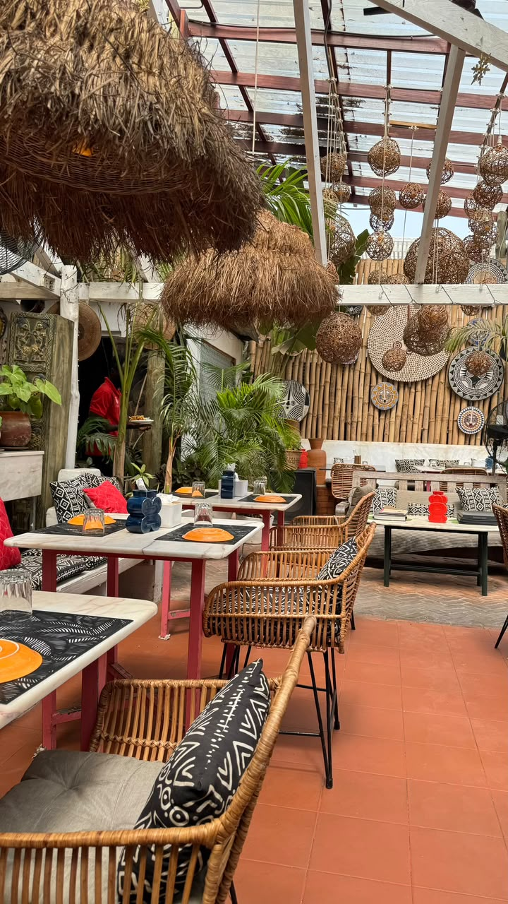

Freetown · Sierra Leone
A taste of Sierra Leone, served with heart.
Local flavours, welcoming service and a table for every occasion in Freetown.

LocationFreetown, Sierra Leone
Find usServing Freetown
Order or askPickup · WhatsApp
From our kitchen
Local favourites
Dine in · Pickup · Catering
A place for lunch, family meals and celebrations.
Choose the service that works for you, and get in touch to plan your visit.
Make a plan
Planning a visit?
Send a table request and the restaurant can confirm availability.